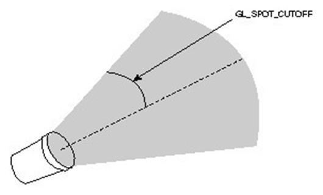

|
类型 |
Hmi |
|
描述 |
设置光源的属性 |
|
语法 |
draw3D_Light(cameranum,lightnum,mode,para1,para2,para3,para4) Cameranum 相机号0 - 9 Lightnum: 光源的编号0-7 mode: AMBIENT 0:属性由四个值表示，分别代表了颜色的R, G, B, A值。表示该光源所发出的光，经过非常多次的反射后，最终遗留在整个光照环境中的强度 DIFFUSE 1:属性由四个值表示，分别代表了颜色的R, G, B, A值。表示该光源所发出的光，照射到粗糙表面时经过漫反射，所得到的光的强度 SPECULAR 2:属性由四个值表示，分别代表了颜色的R, G, B, A值。表示该光源所发出的光，照射到光滑表面时经过镜面反射，所得到的光的强度 POSITION 3:由四个值（X, Y, Z, W）表示。表示光源所在的位置。如果第四个值W为零，则表示该光源位于无限远处，前三个值表示了它所在的方向 SPOT_DIRECTION 4:属性有三个值，表示一个向量，光源发射的方向 SPOT_EXPONENT 5:属性只有一个值，表示聚光的程度，为零时表示光照范围内向各方向发射的光线强度相同，为正数时表示光照向中央集中，正对发射方向的位置受到更多光照，其它位置受到较少光照。数值越大，聚光效果就越明显。 SPOT_CUTOFF 6:属性也只有一个值，表示一个角度，它是光源发射光线所覆盖角度的一半（见图2），其取值范围在0到90之间，也可以取180这个特殊值。取值为180时表示光源发射光线覆盖360度，即不使用聚光灯，向全周围发射。 预留...

注：支持8个光源，这些光源的编号从0-7 |
|
适用控制器 |
|
|
例子 |
DRAW3D_LIGHT(1,0,1, 1,0,0,0)
|